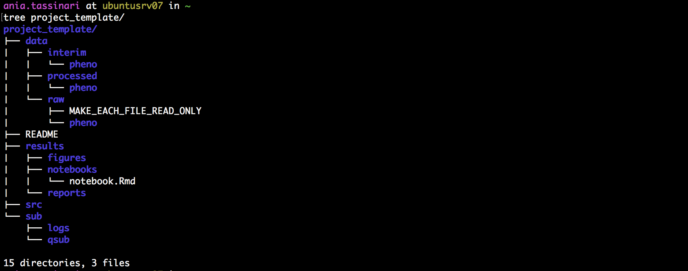

2 Project Workflows
2.1 Using Workflowr
2.1.1 Quick Start
This section is a quick version setting up workflowr, for more clear or specific instructions skip to The Full Guide to Using Workflowr.
2.1.1.1 Set Up
In the Console tab of RStudio make sure you are in (None) project:
install.packages("workflowr")
library("workflowr")
wflow_git_config(user.name = "First Last", user.email = "first.last@agios.com")2.1.1.2 Creating Projects
In the Console tab,
wflow_start("PROJECT_NAME")
wflow_build()
wflow_publish(c("analysis/*.Rmd"), "Publish the initial files for PROJECT_NAME")2.1.1.3 Connecting to GitLab
In the Console tab,
Go to your Agios GitLab and do the following:
- Create a project in GitLab with the same name as the project in RStudio
- Select all the text in the
push an existing Git repository option - Make sure you are in PROJECT_NAME directory and paste into
Terminal
2.1.1.4 Creating a New File
In the Console tab,
wflow_open("analysis/NEW_FILE.Rmd")
wflow_build()
wflow_publish(c("analysis/*.Rmd"), "Publish the file NEW_FILE")In the Terminal tab,

2.1.1.5 Quick Useful Additions
2.1.1.6 Adding PackRat
PackRat records or saves the exact package versions that you depend on and stores them in GitLab.
- Install PackRat
Add PackRat to Existing Project
- Go to
Tools - Click on
Project Options - Click
Add PackRatthen checkUse PackRat for this project - Now, check the following boxes (shown in the image below) and tap
OK*:
- Go to
- This step may take a while if you have a number of packages you are backing up.

Figure 2.1: Showing how to install PackRat into a current project with the suggested selections
2.1.1.6.1 Update Session Information Function
Add the following line to your _workflowr.yml file :
2.1.1.6.2 Publish to GitLab without Rebuilding Sites
A quicker way to push to GitLab without rebuilding your website.
- Edit the Rmd file and save your changes
- Run one of the following commands (doesn’t matter which one you select)
wflow_build()- It doesn’t matter if we build other files, they won’t be added to git unless we add them in the next step
wflow_build("file.rmd")- Knit the file
wflow_git_commit("file.rmd", "This is your commit message")- Flip into the terminal and run
git push()
The Full Guide to Using Workflowr
2.1.2 Installation
2.1.2.1 Programs Needed
We are assuming that you already have RStuido and GitLab, for this implementation we are using the RStudio on the new server (hpc.agios.local) which is RStudio version 1.2.1335.1.
If you don’t have GitLab you need to have an account set up through Agios. If you don’t have the updated RStudio you need to get access to the new server and then use the following link : hpc.agios.local
2.1.2.2 Installing Workflowr
- Open RStudio and change project in the top right corner to
(None)- Make sure you are in your home directory on RStudio as well, thus in the bottom right corner of your screen under
New Folder, it is labeledHomewith a small house.
- Make sure you are in your home directory on RStudio as well, thus in the bottom right corner of your screen under
- In the
Consoletab located in the bottom left hand corner type:
- Confirm you have access to Workflowr, in the
Consoletab:
2.1.3 Create Project
2.1.3.1 Start Project
In the Console tab:
- What does
wflow_startdo?- Creates a directory that contains all files necessary to start a workflowr project
- Changes your current directory to PROJECT_NAME
- Creates a
.gitfolder which we will connect to GitLab repository
- What is the
analysisfolder for?- Contains all source R Markdown files (Rmd)
- Includes:
index.rmd*- Contains no R code but generates
index.htmlwhich eventually runs the entire project
- Contains no R code but generates
- Includes:
- Contains
_site.yml- Allows user to edit theme, navigation bar, menus ect.
- Helpful link to customizing
- Contains all source R Markdown files (Rmd)
- What is the
docsfolder for?- Contains all HTML files for webpage
- Note that this file will be empty until we build the project
- Each HTML file is built from a corresponding Rmd file in the
analysisfolder
- Contains any figures created by Rmd files
- Contains all HTML files for webpage
- What about the
data,codeandoutputfiles?- These files are there for your use and thus can be deleted if desired
2.1.3.2 Build Project*
In the Console tab:
- What does
wflow_build()do?- Builds all the R Markdown files in analysis and saves their HTML in docs
- Displays the website
Your website should be similar to the image of mine shown below (except with a Publish tab instead of a Dates tab)

Figure 2.2: An example of a sucessfully built workflowr page
2.1.3.3 View Project*
At any time you can view the current site on your local machine by typing in the Console tab:
*Shortcut : You can use the knit button to do both of these
2.1.3.4 Publish Website
Currently, our project is simply an HTML file stored on our laptop, publishing the website will make it available online.
In the Console tab:
This allows you to view which files are published or unpublished currently.
Now we want to publish our page the command to do so takes three parts
- c - Stands for commit
- (“analysis/index.Rmd”, “analysis/about.Rmd”, “analysis/license.Rmd”)
- A character vector of the Rmd files you want to be published
- It may be easier to place ("*.Rmd") here to use all the files
- “Publish the initial files for PROJECT_NAME” - A commit message to be posted
Overall, wflow_publish is a quick and error-free way for us to commit and push all of our Rmd files to our GitLab at once.
In the Console tab:
2.1.4 Connecting to GitLab
2.1.4.1 Creating a remote repository on GitLab
- Log in to GitLab and click
New Project - The project name in GitLab has to be the same name as the project name in RStudio: PROJECT_NAME
- Make sure to save it as
Internalso everyone at Agios can see it
Not working? Do you have an ssh key? *
In order for you to successfully connect to GitLab, you need to have an ssh key linked to your GitLab.
There is a simple guide to doing this on GitLab here so you can simply follow along below and click the link if you get lost.
- Automatically copy your public key to the clipboard using one of the following commands:
# macOS:
pbcopy < ~/.ssh/id_ed25519.pub
# WSL / GNU/Linux (requires the xclip package):
xclip -sel clip < ~/.ssh/id_ed25519.pub
#Git Bash on Windows:
cat ~/.ssh/id_ed25519.pub | clip- Go back into your GitLab account and click on
SettingsthenSSH Keysand simply paste there.
- Only need to do this once per laptop or GitLab account
2.1.4.2 Connect RStudio and GitLab
- Go to RStudio, in
Consoletab, type:
- Go back to GitLab and scroll down to the
push an existing Git repositoryoption- Copy everything in the box on GitLab besides the first line (
cd existing_repo), there is an example below of what this should look like.
- Copy everything in the box on GitLab besides the first line (
git remote rename origin old-origin
git remote add origin git@ceres.agios.com:Caitlin.Guccione/test-.git
git push -u origin --all
git push -u origin --tags- Go back into RStudio and in the
Terminaltab- Make sure you are in the PROJECT_NAME repo
- Paste the above commands we got from GitLab
- Return to GitLab to ensure your entire project exists there

Figure 2.3: Example of a Workflowr connection on GitLab
2.1.5 Adding New Files
2.1.5.1 Creating New Files
Make sure you are inside the PROJECT_NAME project inside RStudio
In Console tab type:
- This command creates a new Rmd file and then opens it for your convenience.
If we now want to see the HTML version of our file then we have two options:
- In
Consoletab type:
- You can add specific files to this command or simply leave it empty
- This produces a small view of your website right on RStudio
- Press the `Knit’ button in RStudio as shown below:
Figure 2.4: Display of where the Knit button is located in RStudio
- This produces a large web version of your current HTML file
These steps will simply change the local HTML file, but in order to make this public and add it to GitLab, we need to update our changes.
2.1.5.2 Update your Changes
- Check the status to see what needs to be updated, in the
Consoletab, type:
This can also be done by looking at the red checks on the workflowr section of your live page as shown below:
Figure 2.5: A demenstration of a live Workflowr page
- Make the appropriate HTML files public and updated, in the
Consoletab, type:
- This is the same format found on the Publish Website tab of this page and so you can customize it in the same way
There is one exception to this and it’s when you want to make updates to the _site.yml file found in the analysis folder. This file controls the style on the top of every page of your website. In this case, you want to update all HTML files even though their Rmd files aren’t changed.
In that case, use this,
- Push the final changes to GitLab
As we did previously in the Publish Website, in the Terminal tab, type:
2.1.5.3 Adding Workflowr to New File
If you want the workflowr setup which is found on all the other pages, then replace the — part of the file with the following code:
---
title: "Home"
site: workflowr::wflow_site
output:
workflowr::wflow_html:
toc: false
editor_options:
chunk_output_type: console
---
2.1.6 Quick Additions to Improve your Workflowr
2.1.6.1 Adding PackRat
PackRat records or saves the exact package versions that you depend on and stores them in GitLab.
- Install PackRat
Add PackRat to Existing Project
- Go to
Tools - Click on
Project Options - Click
Add PackRatthen checkUse PackRat for this project - Now, check the following boxes (shown in the image below) and tap
OK*:
- Go to
- This step may take a while if you have a number of packages you are backing up.
* This step may take a while if you have a large amount of packages you want to back up
- A panel called PackRat will now appear under packages
- It will automatically notify you if packrat has a package that you don’t and then prompt you to download it
- It also gives you the option to clean un-used packages so that packrat doesn’t get too cluttered
2.1.6.2 Update Session Information Function
The following steps simply add more information to your Session Info button found at the bottom of your workflowr. For more information about how to further customize the Session Info output click here
Add the following line to your _workflowr.yml file :
2.1.6.3 Publish to GitLab without Rebuilding Sites
A quicker way to push to GitLab without rebuilding your website.
- Edit the Rmd file and save your changes
- Run one of the following commands (doesn’t matter which one you select)
wflow_build()- It doesn’t matter if we build other files, they won’t be added to git unless we add them in the next step
wflow_build("file.rmd")- Knit the file
wflow_git_commit("file.rmd", "This is your commit message")- Flip into the terminal and run
git push()
2.1.8 Styling the Webpage
2.1.8.1 Helpful Links
If you already have an idea of what you would like to change, below are a few very helpful resources filled with information:
- This resource is a great place to start because it has all basics of Rmd syntax and I used it as a cheat sheet along the way.
- This is an entire book all about Rmd and how to use it. I found it rather lengthy but very helpful.
- If something isn’t quite working right you may have run into a workflowr issue in which cause their FAQ’s page is helpful.
2.1.8.2 Changing the Theme
Changing the theme modifies the overall appearance of the webpage and is a quick and easy way to spice up the page.
- Go into your
analysis/_site.ymlfile - Underneath
ouputaddtheme = ceruleanas shown below:- The cerulean theme matches Agios colors
- Choose your theme
- The following themes are available : “default”, “cerulean”, “journal”, “flatly”, “darkly”, “readable”, “spacelab”, “united”, “cosmo”, “lumen”, “paper”, “sandstone”, “simplex”, “yeti”
- You can view how they look here: Themes
- Preview your theme using,
- Update your website by running,
- This will rebuild every HTML file even if their corresponding Rmd file hasn’t been updated
The following website will also walk you through changing the theme: Themes Overview
2.1.8.3 Adding Photos
Although this may seem like a simple task, it is a bit challenging since we are using Workflowr
- Create a
photosfolder inside thedocsfolder and add your photo there:
- Include the following command wherever you want your graphic to appear:

+ Adjusting `out.width` changes the size of the photo- View the images on the webpage
- Add to GitLab
- We need to push the actual photo to GitLab using
wflow_git_commitand then we can usewflow_publishto automatically push the rest of the files to GitLab
- We need to push the actual photo to GitLab using
2.1.8.4 Blogdown
Blogdown is another way that you can customize your workflowr page more easily. It is a combination of the well known blogdown and workflowr.
You can clone the following repo on GitHub if you want to try it out: Blogdown/Workflowr Repo
2.2 Set Up Workflow and Executing
2.2.1 Create a folder for your newproject
Come up with a project structure you like and stick with it.
2.2.1.1 Copy from a previously created template folder
Use cp -r project_template newproject, where project_template has structure:

2.2.1.2 Use a bash script
Call ./setup_project.sh newproject, where setup_project.sh is:
#!/bin/bash
NEW=$1
## Set up folder structure
mkdir $NEW
cd $NEW
touch README
mkdir data
mkdir data/raw
mkdir data/raw/pheno
mkdir data/interim
mkdir data/processed
mkdir data/processed/pheno
touch data/raw/MAKE_EVERY_FILE_READ_ONLY
mkdir results
mkdir results/reports
mkdir results/notebooks
mkdir results/figures
mkdir sub
mkdir sub/logs
mkdir sub/qsub
mkdir src
touch src/functions.R
Don’t forget!
- Fill project README
- Adapt structure to project needs
- Exclude data and other large files from git using .gitignore (see next section)
- Make files in data/raw read-only with chmod -w
2.2.2 Set up a repository for your code on Agios’ secure GitLab
Create a new project at http://ceres.agios.com (Mark P. can help)
2.2.3 Set up a repository for your code locally and link to GitLab
In your newproject folder on command line execute (modify user name):
2.2.4 Set up an R project in RStudio
Choose Existing Directory (newproject)


2.2.5 Analysis in R and RStudio
Data:
- Raw data:
- If accessed from the web, include url, description, and date accessed in README
- Processed:
- Processed data should be named so it is easy to see which script generated the data
- Can add file descriptions to
filename.READMEand place processing script in the same directory as data (works well for preprocessing steps, like alignments, etc)
- Can add file descriptions to
- Processed data should be tidy
- Processed data should be named so it is easy to see which script generated the data
Code:
- Place (almost) all intermediate scripts in
newproject/src/ - Any chunks of code frequently reused in the analysis should be converted into functions, saved in
newproject/src/functions.R, and sourced in scripts, notebooks and reports.
- Use Google’s R Style Guide or The tidyverse styleguide to format your code and make it easier to read (if need be run code through formatR)
Figures:
- Exploratory:
- Don’t have to be pretty
- Can be embedded in report/notebook
- Final:
- Should be polished and saved in
newproject/results/figures/
- Should be polished and saved in
Scripts:
- Raw:
- May be less commented (but comments help you!)
- May be multiple versions
- May include analyses that are later discarded
- Final:
- Clearly commented
- Small comments liberally - what, when, why, how
- Bigger commented blocks for whole sections
- Include processing details
- Only analyses that appear in the final write-up
Notebooks and reports:
R markdown files can be used to generate reproducible reports
Text and R code are integrated
Notebooks:
- intermediate
- may use one per day or one per subanalysis
- documents all atempts
Reports:
- final methods and results only
- good for sharing
Adapted from: Reproducible Research at Coursera
2.2.6 Version control in git and GitLab
Adopt a branching workflow appropriate for the project and team size, and stick to it.
Reprinted from: Git workflow for small teams. Link currently is password protected.
git and git-workflow resources:
Learn git
Git branching model
GitFlow
2.2.7 Keeping track of enviroment
Use devtools::session_info()
> devtools::session_info()
Session info -----------------------------------------------------------------------------------------------------------------
setting value
version R version 3.4.2 (2017-09-28)
system x86_64, linux-gnu
ui RStudio (99.9.9)
language (EN)
collate en_US.UTF-8
tz America/New_York
date 2018-05-02
Packages ---------------------------------------------------------------------------------------------------------------------
package * version date source
backports 1.1.1 2017-09-25 CRAN (R 3.4.2)
base * 3.4.2 2017-10-05 local
compiler 3.4.2 2017-10-05 local
[...]
or sessionInfo()
> sessionInfo()
R version 3.4.2 (2017-09-28)
Platform: x86_64-pc-linux-gnu (64-bit)
Running under: Ubuntu precise (12.04.4 LTS)
Matrix products: default
BLAS: /data2/software/R/3.4.2/lib/R/lib/libRblas.so
LAPACK: /data2/software/R/3.4.2/lib/R/lib/libRlapack.so
locale:
[1] LC_CTYPE=en_US.UTF-8 LC_NUMERIC=C LC_TIME=en_US.UTF-8 LC_COLLATE=en_US.UTF-8 LC_MONETARY=en_US.UTF-8 LC_MESSAGES=en_US.UTF-8 LC_PAPER=en_US.UTF-8 LC_NAME=C
[9] LC_ADDRESS=C LC_TELEPHONE=C LC_MEASUREMENT=en_US.UTF-8 LC_IDENTIFICATION=C
attached base packages:
[1] stats graphics grDevices utils datasets methods base
loaded via a namespace (and not attached):
[1] Rcpp_0.12.13 digest_0.6.12 withr_2.0.0 rprojroot_1.2 backports_1.1.1 magrittr_1.5 evaluate_0.10.1 stringi_1.1.5 rstudioapi_0.7 rmarkdown_1.6 devtools_1.13.3 tools_3.4.2 stringr_1.2.0 yaml_2.1.14 compiler_3.4.2
[16] memoise_1.1.0 htmltools_0.3.6 knitr_1.17
or docker with rrtools